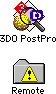
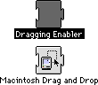

If your Macintosh is running System 7.1 or earlier, follow these steps:

Figure 1: 3DO PostPro program and Remote folder icons
Warning: A Clipping extension file is included in the same
directory. If you are running System 7.1 or later, delete the Clipping
extension file, as it causes system problems.

Figure 2: Dragging Enabler and Macintosh Drag and Drop icons